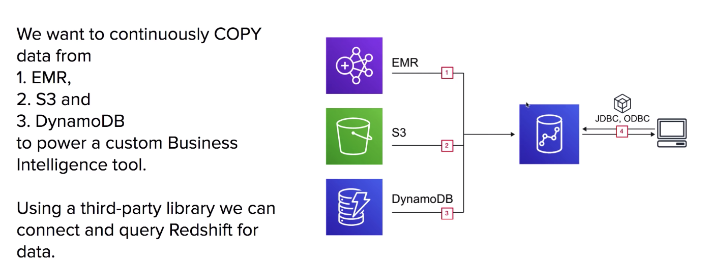
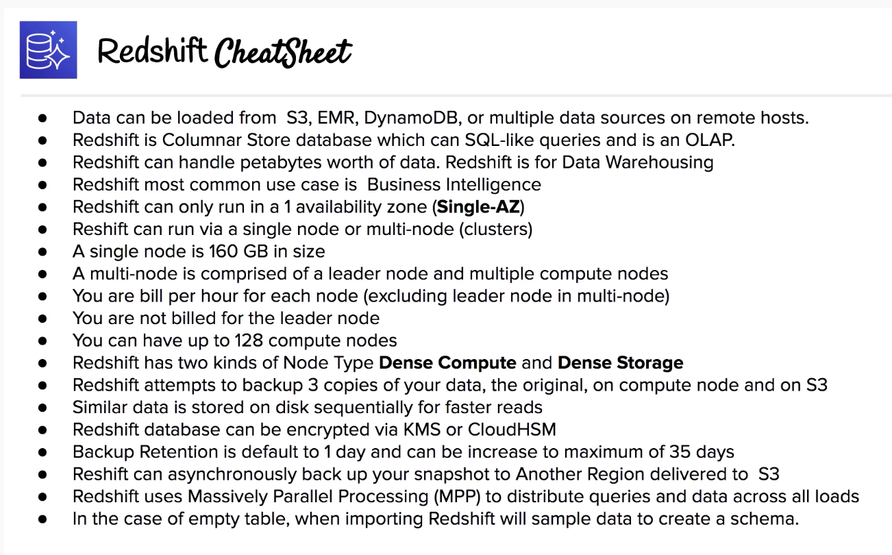

Fully managed Petabyte-size Data Warehouse. Columnar Store Database.
Analyze (Run complex SQL queries) on massive amounts of data.
What is a Data Warehouse?
A transaction symbolizes a unit of work performed within a database management system, eg. reads and writes
Database
Online Transaction Processing(OLTP)
A database was built to store current transactions and enable fast access to specific transactions for ongoing business processes.
Once Source
Short transactions (small and simple queries) with an emphasis on writes
Data Warehouse
Online Analytical Processing (OLAP)
A data warehouse is built to store large quantities of historical data and enable fast, complex queries across all the data.
Multiple Sources
Long transactions (long and complex queries) with an emphasis on reads
Intro to Redshift
$1000 per terabyte per year - less than 1/10 cost of most similar services.
Redshift is used for Business Intelligence
Redshift uses OLAP (Online Analytics Processing System)
Redshift is Columnar Storage Database

Columnar Storage
Columnar Storage for database tables is an important factor in optimizing analytic query performance because it drastically reduces the overall disk I/O requirements and reduces the amount of data you need to load from disk.
Columnar Storage stores data together as columns instead of rows.
OLAP applications looks at multiple records at the same time.
You save memory because you fetch just the columns of data you need instead of whole rows.
Since data is stored via column, that means all data is of the same data type, allowing for easy compression.
Cluster Types
Single Node
Nodes come in size of 160GB.
You can launch a single node to get started with Redshift.
Multi-Node
You can launch a cluster of nodes with Multi Node mode.
- Leader Node: manage client connections and receiving queries
- Compute Node: Stores data and performs queries up to 128 compute nodes (original maximum is 32)
Node Types
- Dense Compute (dc): Best for high performance, but they have less storage
- Dense Storage (ds): clusters in which you have a lot of data
Compression
Redshift uses multiple compression techniques to achieve significant compression relative to traditional relational data stores.
Similar data is stored sequentially on disk.
Does not required indexes or materialized views, which saves a lot of space compared to traditional systems.
When loading data to an empty table, data is sampled and most appropriate compression scheme is selected automatically.
Processing
Redshift uses Massively Parallel Processing (MPP)
Automatically distributes data and query loads across all nodes.
Lets you easily add new nodes to your data warehouse while still maintaining fast query performance.
Backup
Backups are enabled by default with a 1 day retention period.
Retention period can be modified up to 35 days.
Redshift always attempts to maintain at least 3 copies of your data:
- The original copy
- Replica on the compute nodes
- Backup copy in S3
Can asynchronously replicate your snapshots to S3 in a different region
Billing
Compute Node Hours
- The total number of hours ran across all nodes in the billing period.
- Billed for 1 unit per node, per hour.
- Not charged for leader node hours, only compute nodes incur charges.
Backup
Backups are stored on S3 and you are billed the S3 storage fees
Data Transfer
There is no charge for data transferred between Amazon Redshift and Amazon S3 within the same AWS Region for backup, restore, load, and unload operations.
For all other data transfers into and out of Amazon Redshift, you will be billed at standard AWS data transfer rates.
In particular, if you run your Amazon Redshift cluster in Amazon VPC, you will see standard AWS data transfer charges for data transfers over JDBC/ODBC to your Amazon Redshift cluster endpoint.
In addition, when you use Enhanced VPC Routing and unload data to Amazon S3 in a different region, you will incur standard AWS data transfer charges.
Security
Data-in-transit: Encrypted using SSL
Data-at-rest: Encrypted using AES-256 encryption
Data Encryption can be applied using:
- KMS multi-tenant HSM
- CloudHSM single tenant HSM (hardware security module)
Availability
Single AZ
To run in multi-AZ you have to run multiple Redshift clusters in different AZs with same inputs manually.
Snapshots can be restored to a different AZ in the event an outrage occurs.
